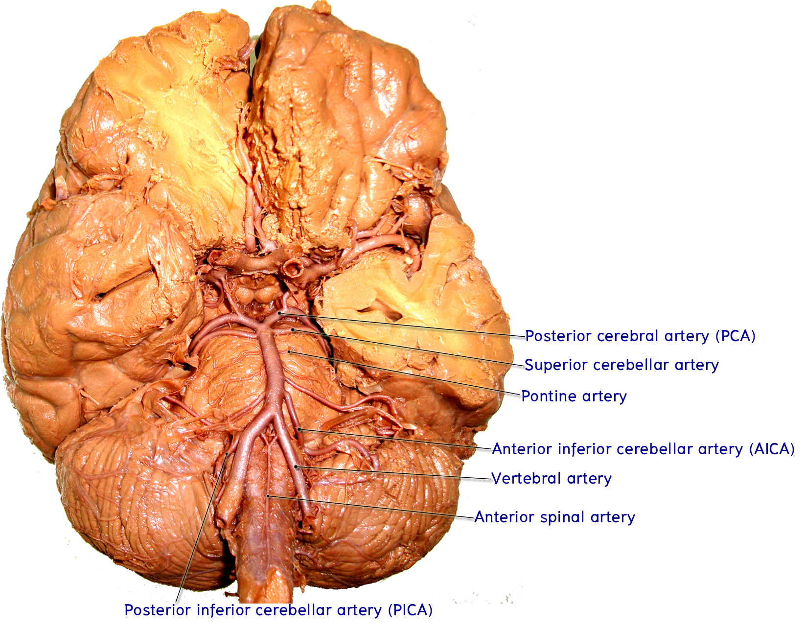

Vertebro-basilar system
ให้นักศึกษานำสมองทั้งก้อนที่มีหลอดเลือดติดอยู่ มาศึกษาระบบของ vertebrobasilar system ซึ่งประกอบด้วยแขนงของ vertebral artery และ basilar artery ที่บริเวณ ventral surface ของก้านสมอง และไปสิ้นสุดที่ posterior cerebral artery ซึ่งเป็น terminal branch ของ vertebro-basilar system
สังเกตตำแหน่งของ vertebral artery ทั้งสองข้างที่วางอยู่บน anterolateral aspect ของ medulla ซึ่งทั้งสองข้างนี้จะเชื่อมต่อกันเป็น basilar artery ที่ระดับ pontomedullary junction

- Anterior spinal artery แตกแขนงจาก vertebral arteries ทั้งสองข้าง ที่บริเวณใกล้ๆกับ pontomedullary junction แล้วมาเชื่อมต่อกันในแนวกลางและทอดลงมาตาม anterior median fissure ของ medulla แล้วต่อลงมาถึง anterior fissure ของไขสันหลัง
- Posterior inferior cerebellar artery (PICA) แตกแขนงจาก vertebral arteries ทั้งสองข้างที่ lateral aspect ของหลอดเลือด แล้วทอดอ้อมไปทางด้าน posterolateral ของ medulla จนไปถึง inferior surface ของ cerebellum
- Posterior spinal artery แตกแขนงจาก vertebral arteries ทั้งสองข้างที่ lateral aspect ของหลอดเลือด แล้วทอดอ้อมมาที่ posterolateral sulcus ของ medulla แล้วต่อลงไปถึงไขสันหลัง (ในบางสมองอาจพบว่าแขนงนี้แตกมาจาก posterior inferior cerebellar artery)
Basilar artery
ชี้แสดง basilar artery ซึ่งเป็นหลอดเลือดใหญ่ที่เกิดจากการรวมกันของ vertebral arteries ทั้งซ้ายและขวา ที่ pontomedullary junction แล้วทอดตรงขึ้นไปตาม basilar sulcus บน basis pontis จนไปสิ้นสุดที่บริเวณ interpeducular fossa ของ midbrain
ชี้แสดงแขนงใหญ่ ๆ ที่ออกจาก basilar artery ดังต่อไปนี้
- Anterior inferior cerebellar artery (AICA) แตกแขนงจาก basilar artery ที่บริเวณ superior ต่อ pontomedullary junction เล็กน้อย แล้วทอดไปที่ cerebellopontine angle เพื่อให้แขนงไปเลี้ยง anteroinferior part ของ cerebellum
- Superior cerebellar artery (SCA) แตกแขนงจากส่วนบนของ basilar artery แล้วทอดอ้อมรอบขอบล่างของ cerebral peduncle เพื่อเลี้ยง superior part ของ cerebellum และบางส่วนของ midbrain